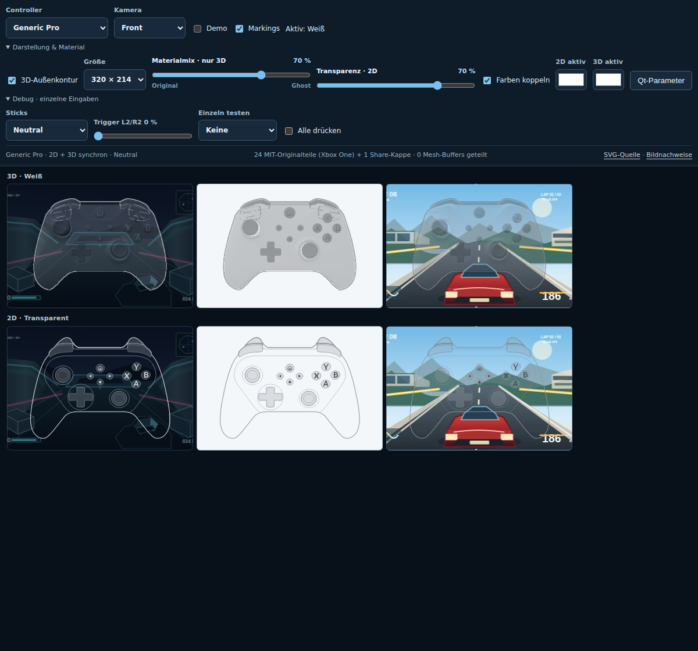
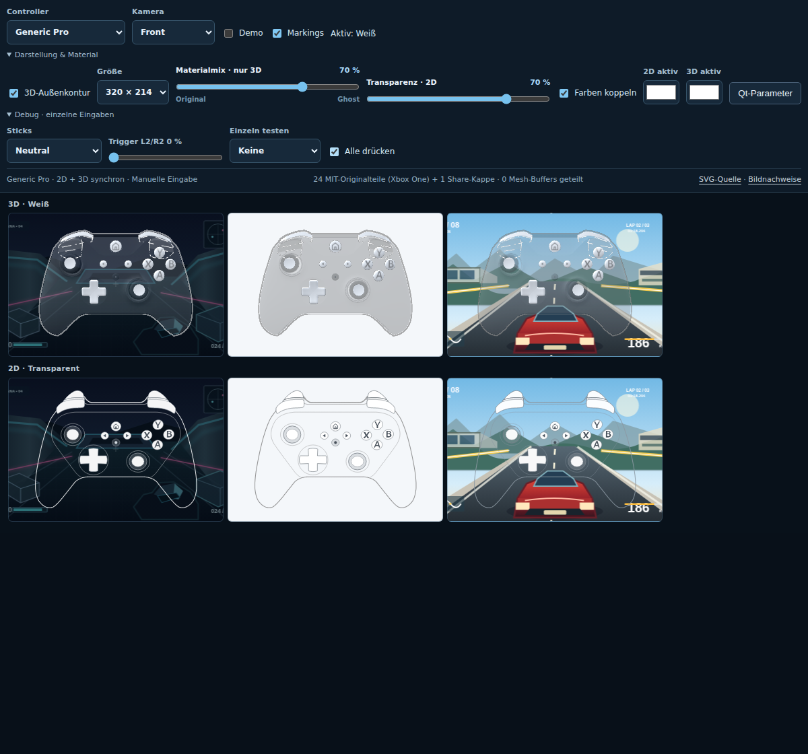
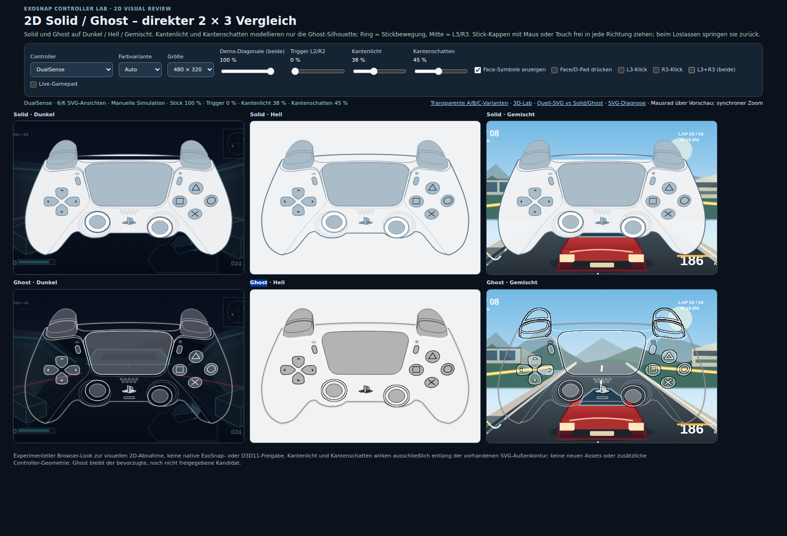
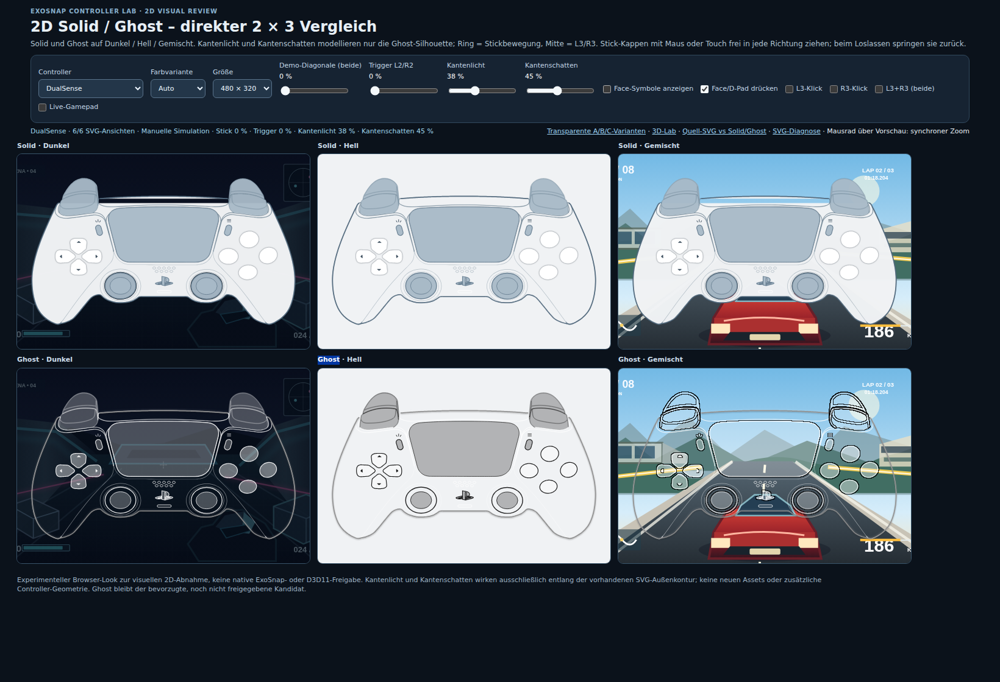
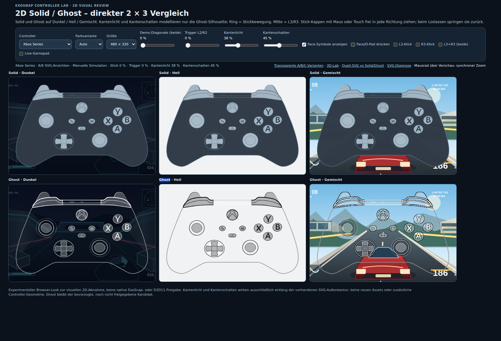
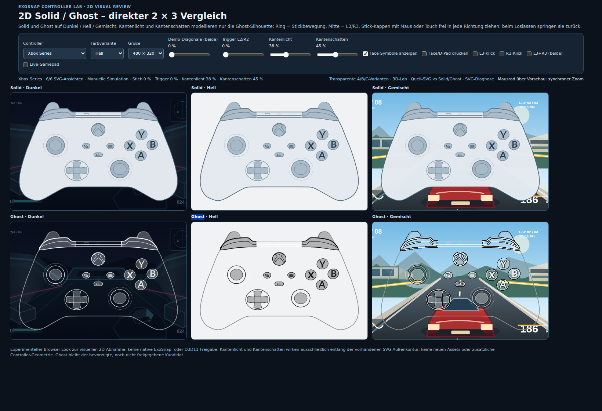
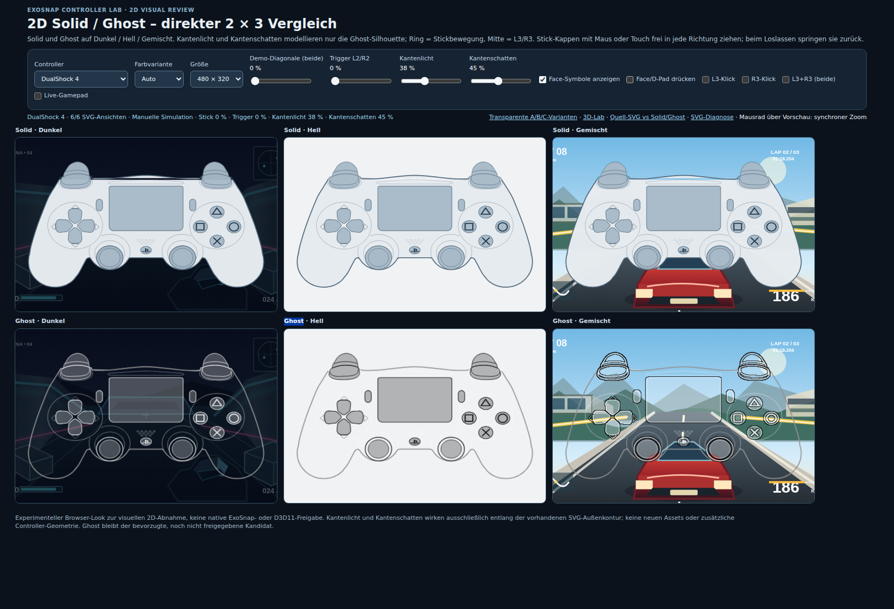
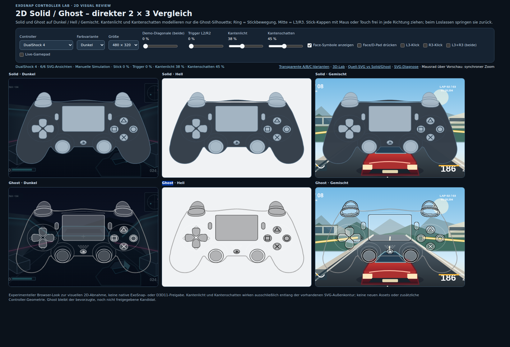

Screenshot-Verlauf
Nur echte Chromium-WebGL-Aufnahmen nach erfolgreicher Renderer- und Laufzeitprüfung. Bilder belegen einen erzeugten Renderframe, keine ästhetische Freigabe.

Generic Pro – neutral

Generic Pro – gedrückt

Aktueller Stand – neutral

Aktueller Stand – gedrückt

GameCube – Originalfarben, A/B/X/Y
2D-Polish · Browser-Abnahme
Alle Bilder werden direkt vom Chromium-Browser gerendert. Zum interaktiven 2D-Lab. Vergleich bei voller Bewegung und Klick ist erwartungsgemäß in beiden Stick-Modi weiß; ohne Klick sind die Unterschiede direkt sichtbar.


DualSense · Mitte-Feedback, Bewegung + Klick


DualSense · Ring bei Bewegung ohne Klick

DualSense · Mitte bei Bewegung ohne Klick



DualSense · Face-Symbole aus


Xbox Series · Auto (Dunkel)


Xbox Series · Hell


DualShock 4 · Auto (Hell)


DualShock 4 · Dunkel

Ghost/Mixed · Konturschein 0 %

Ghost/Mixed · Konturschein 50 %

Ghost/Mixed · Konturschein 100 %
Frühere Revisionen
- Lade Versionshistorie …